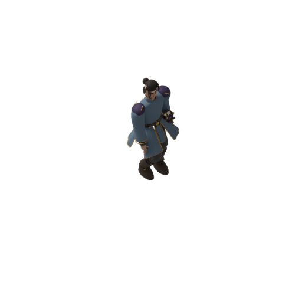
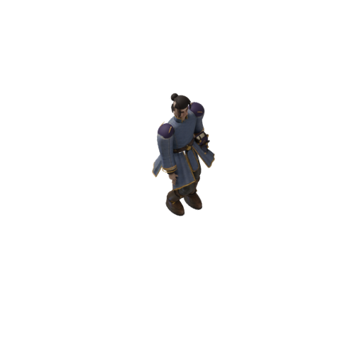
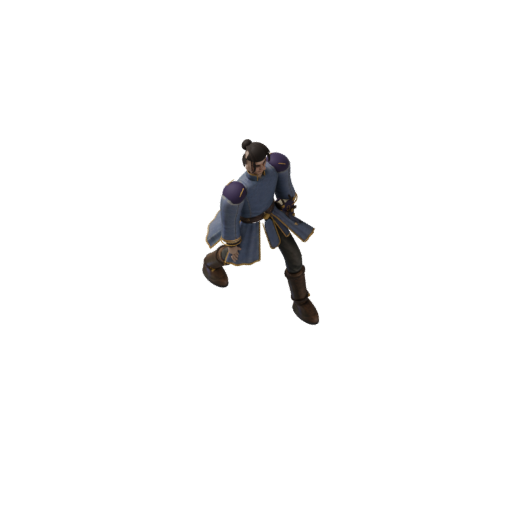
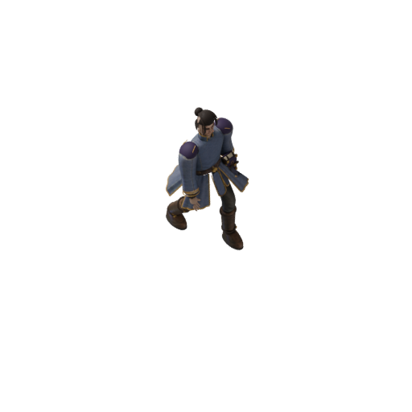
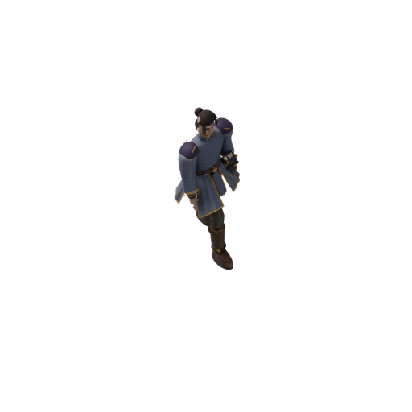
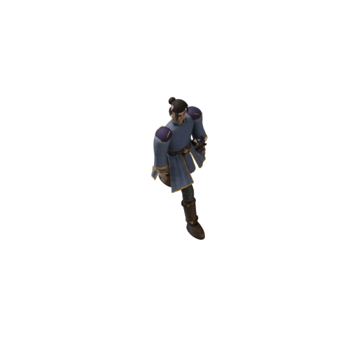
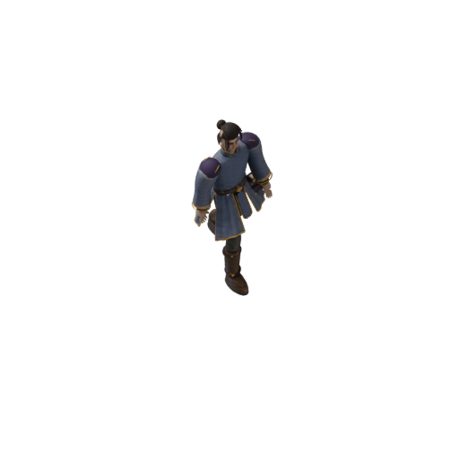
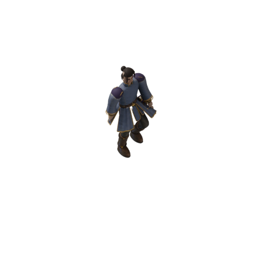
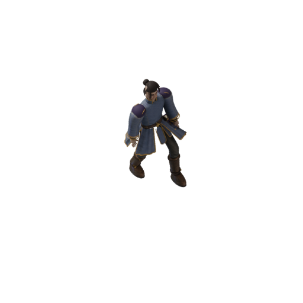
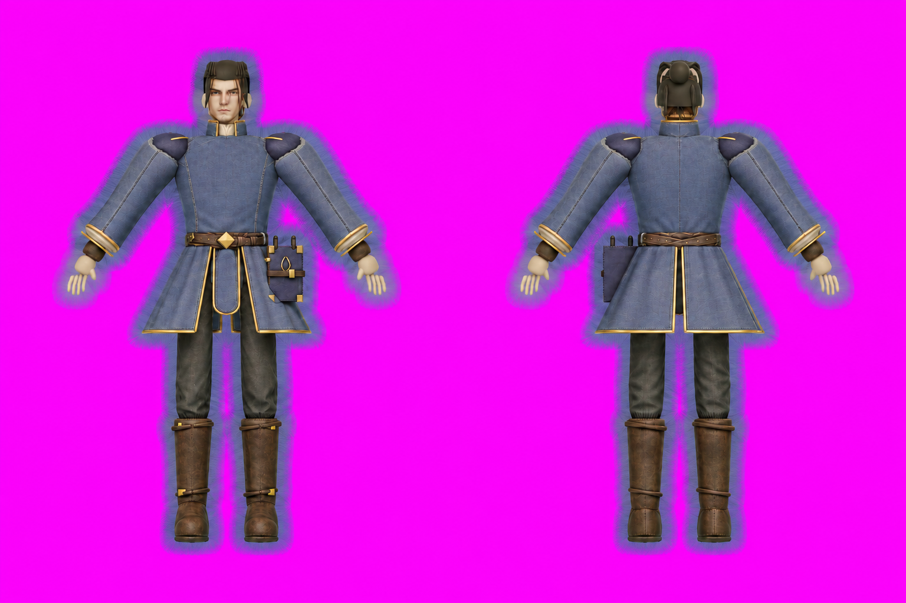

Godot shipping target; Pixi test harness. Selected direction: F04 clarity, F03 environmental detail/light.
Scoped texture-boundary improvement; full source-art pilot remains unqualified. Texturev1 leaked magenta; the single padding repair removes the diagnostic contamination in48frames. Generated details remain anchored to unchanged geometry. Full gait/style and multi-view transfer are still unqualified.


The body reference is150px in the paired sources above; no source enlargement. Geometry/contact comparisons use the same camera and action. Material changes are explicitly shown, not an isolated garment-only color comparison.







Left50px; right150px freshly rendered from the native source.2m/s,.8s cycle. The moving grid follows the JSON root, not an altered pose.
Findings · Texture-boundary measurements · Geometry/weight invariants · F04 art target
The magenta surrounds are technical texture padding. They are not a glow layer or part of the runtime silhouette.

{kind=link}
{kind=link}
{kind=link}